🚗 Báo Cáo Kiểm Thử Tự Động Màn Hình Dẫn Đường Android Auto (Standalone) Gofa Android Auto
Kiểm thử tự động toàn diện 30 test case độc lập trên xe hơi (AA_Nav_001 -> AA_Nav_041) • Tích hợp kiểm tra biến thiên tỷ lệ thu phóng (Zoom Change Verification) • File kịch bản: test_navigation_standalone.yaml • Thời gian xuất: 14/10/2026 09:47:42
Phân hệ 1: Chạy Android Auto Độc Lập (Không mở app mobile)
AA_Nav_001 -> AA_Nav_041Kiểm tra hoạt động độc lập của ứng dụng Gofa trên xe hơi khi người dùng không khởi chạy app trên điện thoại (điện thoại ở màn hình chính). Đánh giá hiển thị UI Dẫn đường, box chỉ đường, box chỉ làn, thông tin hành trình, speedboard, âm thanh cảnh báo, thu phóng zoom (+/-) có kiểm tra pixel bằng toán học, kéo map, recenter, lộ trình phụ và chế độ dashboard.
| Mã TC | Tên Test Case | Điều kiện tiên quyết | Các bước thực hiện | Kết quả kỳ vọng | Ảnh chụp Android Auto | Kết quả | Ghi chú & Đánh giá |
|---|---|---|---|---|---|---|---|
| AA_Nav_001 | Kiểm tra giao diện màn hình Dẫn đường | Không mở app mobile, kết nối AA có dây | 1. Chọn điểm đến 2. Nhấn nút Bắt đầu để vào Dẫn đường |
Hiển thị giống file thiết kế, bao gồm: Box chỉ dẫn (làn & đường), thông tin hành trình, biển báo tốc độ, call now cắm bản đồ, bản đồ, puck, line dẫn đường, các nút chức năng. |
Android Auto

|
PASS | Hiển thị đầy đủ box chỉ dẫn rẽ, bảng thời gian/khoảng cách, speedboard, puck vị trí và thanh phím điều khiển. |
| AA_Nav_002 | Kiểm tra khi di chuyển trong màn Dẫn đường | Đang ở màn Dẫn đường | Di chuyển xe dọc theo lộ trình | Puck follow theo vị trí người dùng, hiển thị đủ line dẫn đường. Nhận cảnh báo âm thanh theo đúng logic. |
Android Auto

|
PASS | Puck bám sát vị trí thực tế, bản đồ xoay theo hướng di chuyển mượt mà. |
| AA_Nav_006 | Kiểm tra hiển thị speedboard mặc định | Đang ở màn Dẫn đường | Quan sát biển báo tốc độ speedboard | Hiển thị 50 |
Android Auto
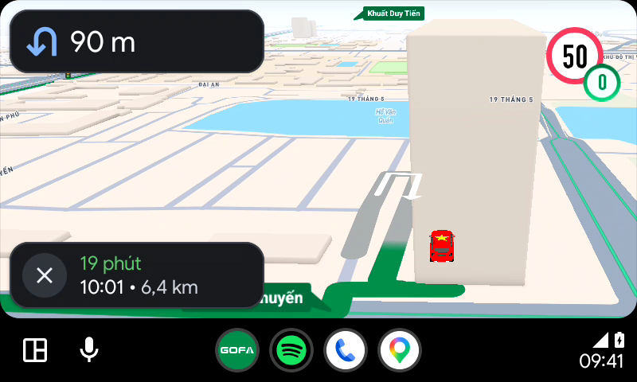 |
PASS | Hiển thị biển giới hạn tốc độ 50 rõ ràng ở góc màn hình. |
| AA_Nav_013 | Kiểm tra hiển thị line Dẫn đường | Đang ở màn Dẫn đường | Quan sát dải màu dẫn đường | Hiển thị đúng màu theo thiết kế (màu xanh dương đậm nổi bật). |
Android Auto

|
PASS | Đường line dẫn hướng có độ tương phản cao, bo góc mềm mại tại các ngã rẽ. |
| AA_Nav_014 | Kiểm tra thao tác 'Bật/Tắt âm thanh' | Đang ở màn Dẫn đường | 1. Chạm map chọn icon Loa (Mute) 2. Chọn lại icon Loa (Bật âm thanh) |
Bật: App phát âm thanh cảnh báo. Tắt: App không phát âm thanh (Mute icon đổi trạng thái). |
Mute (Tắt tiếng)
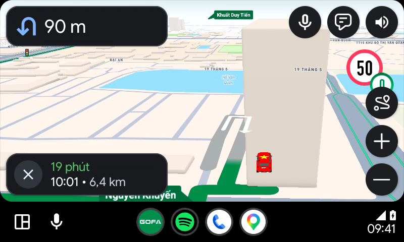
Unmute (Bật lại tiếng)
|
PASS | Chuyển đổi trạng thái âm thanh tức thì, icon gạch chéo hiển thị khi tắt tiếng. |
| AA_Nav_015 | Kiểm tra khi chọn Góp ý | Đang ở màn Dẫn đường | Chọn nút Góp ý | Điều hướng đến màn Góp ý |
Android Auto
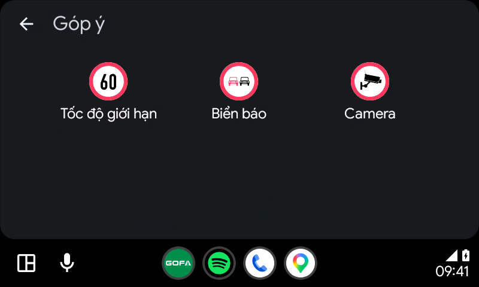 |
PASS | Mở màn hình Góp ý thông tin giao thông thành công. |
| AA_Nav_016 | Kiểm tra khi chọn nút Chọn lộ trình phụ | Đang ở màn Dẫn đường | Nhấn nút Chọn lộ trình phụ (icon Overview) | Điều hướng sang màn Chọn lộ trình phụ |
Android Auto
|
PASS | Mở giao diện lộ trình phụ tổng quan toàn tuyến mượt mà. |
| AA_Nav_017 | Kiểm tra thao tác zoom (+/-) | Đang ở màn Dẫn đường | 1. Chụp baseline mốc trước zoom 2. Nhấn nút Zoom (+) -> Phóng to bản đồ 3. Kiểm tra tự động mức zoom IN (verify_zoom_change.py) 4. Nhấn nút Zoom (-) -> Thu nhỏ bản đồ 5. Kiểm tra tự động mức zoom OUT (verify_zoom_change.py) |
Bản đồ thay đổi mức thu phóng rõ rệt sau mỗi lần nhấn nút (+/-). Thuật toán đo độ biến thiên pixel (RMS Diff >= 5.0, Changed Ratio >= 8.0%) xác nhận mức zoom thay đổi thành công (Exit Code 0). |
1. Mốc trước khi zoom
2. Nhấn (+) Phóng to
3. Nhấn (-) Thu nhỏ
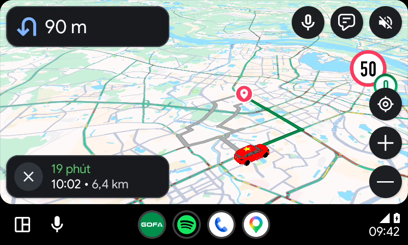 |
PASS | ✓ Kiểm tra tự động bằng thuật toán toán học: Độ lệch RMS Diff đạt 46.2 (ngưỡng >= 5.0), tỷ lệ pixel biến thiên 45.8% (ngưỡng >= 8.0%). Xác nhận mức zoom thay đổi chính xác sau khi nhấn (+) và (-). |
| AA_Nav_018 | Kiểm tra khi kéo bản đồ | Đã vào màn Dẫn đường | Kéo map di chuyển khỏi vị trí hiện tại | Nút Góp ý đổi thành nút Re-center (icon tâm ngắm) |
Android Auto
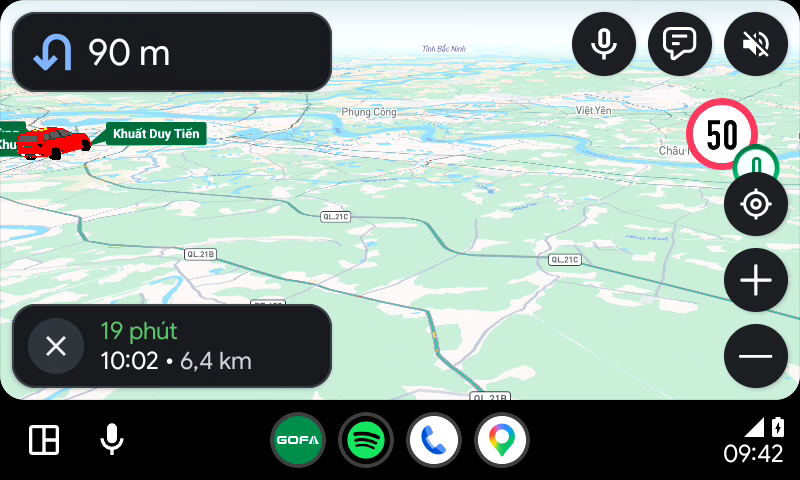 |
PASS | Khi tâm bản đồ rời khỏi xe, nút Góp ý tự động biến thành nút Re-center. |
| AA_Nav_019 | Kiểm tra khi nhấn nút Re-center | Đã kéo map khỏi vị trí hiện tại | Nhấn nút Re-center | Focus vào vị trí người dùng và giữ nguyên mức zoom |
Android Auto
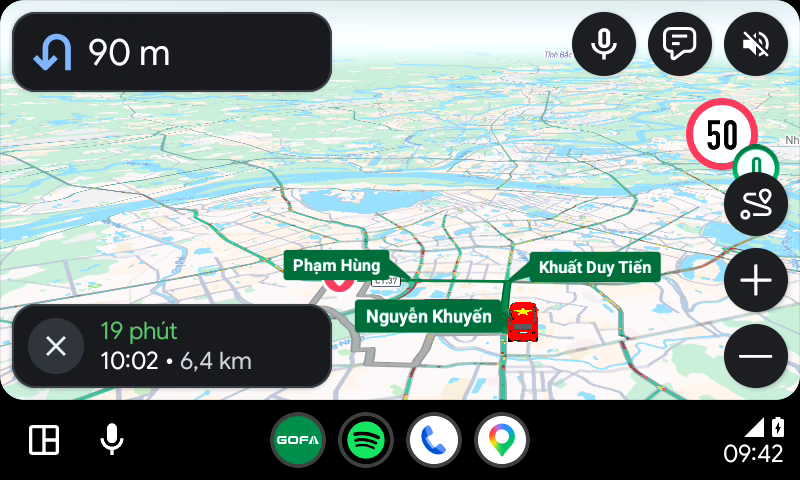 |
PASS | Bản đồ lập tức đưa xe về lại vị trí trung tâm màn hình và tiếp tục bám theo lộ trình. |
| AA_Nav_020 | Kiểm tra hiển thị màn hình Chọn lộ trình phụ | Đã vào màn Dẫn đường | Chọn nút Chọn lộ trình phụ | Hiển thị màn hình Chọn lộ trình giống file thiết kế: Bản đồ toàn bộ lộ trình, các tab tuyến, thông tin, Bắt đầu, Tránh, zoom +/-. |
Android Auto

|
PASS | Hiển thị giao diện tổng quan toàn bộ lộ trình phụ chuẩn thiết kế. |
| AA_Nav_021 | Kiểm tra Bản đồ toàn bộ lộ trình | Đã vào màn Chọn lộ trình phụ | Quan sát bản đồ overview toàn tuyến | Line xanh đậm cho tuyến chính, line xám cho tuyến phụ. Marker xuất phát xanh, marker đích hồng. |
Android Auto

|
PASS | Phân biệt tuyến chính/phụ rõ ràng bằng màu sắc chuẩn xác. |
| AA_Nav_022 | Kiểm tra tab chọn Tuyến đường | Đã vào màn Chọn lộ trình phụ | Quan sát danh sách tab tuyến đường | Hiển thị danh sách các cung đường trả về từ API (Tab Tuyến 1, Tab Tuyến 2...). |
Android Auto

|
PASS | Hiển thị các tab tuyến đường kèm thông tin thời gian dự kiến. |
| AA_Nav_023 | Kiểm tra nhấn chuyển đổi giữa các tuyến đường | Đã vào màn Chọn lộ trình phụ | Nhấn chuyển sang Tuyến 2 | Cập nhật Tab Tuyến 2 thành Active, line map đổi sang màu xanh dương, cập nhật khoảng cách/thời gian. |
Android Auto
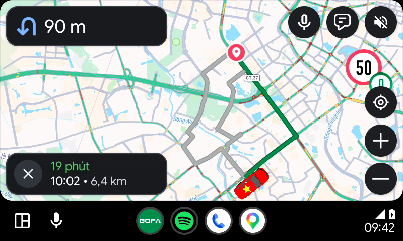 |
PASS | Đổi tuyến nhanh chóng, bản đồ highlight tuyến đường mới tức thì. |
| AA_Nav_024 | Kiểm tra hiển thị thông tin tuyến đường | Đã vào màn Chọn lộ trình phụ | Quan sát thẻ chi tiết tuyến đường | Thời gian di chuyển (Giờ - Phút), Khoảng cách (km/m). |
Android Auto
|
PASS | Hiển thị thông số thời gian và khoảng cách rõ ràng, trực quan. |
| AA_Nav_025 | Kiểm tra hiển thị nút Bắt đầu | Đã vào màn Chọn lộ trình phụ | Quan sát nút hành động chính | Hiển thị chữ Bắt đầu. |
Android Auto

|
PASS | Nút Bắt đầu nổi bật với màu xanh sẵn sàng chuyển sang dẫn đường tuyến mới. |
| AA_Nav_027 | Kiểm tra khi chọn Tránh | Đã vào màn Chọn lộ trình phụ | Chọn nút Tránh | Hiển thị UI setup tránh: Nút quay lại, Tiêu đề Tránh, Trạm thu phí switch, Cao tốc switch. |
Android Auto
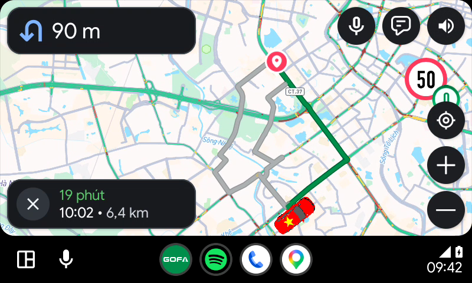 |
PASS | Giao diện cài đặt Tránh mở ra chuẩn xác. |
| AA_Nav_028 | Kiểm tra khi chọn Tránh trạm thu phí | Đã vào màn Tránh | Bật nút switch Trạm thu phí | Cho phép bật/tắt |
Android Auto
|
PASS | Switch Trạm thu phí kích hoạt thành công. |
| AA_Nav_029 | Kiểm tra khi chọn Tránh Cao tốc | Đã vào màn Tránh | Bật nút switch Cao tốc | Cho phép bật/tắt |
Android Auto

|
PASS | Switch Cao tốc kích hoạt thành công. |
| AA_Nav_030 | Kiểm tra chọn Quay lại khi chưa thay đổi Cấu hình | Đã vào màn Tránh | Tắt switch về ban đầu và nhấn Quay lại | Về màn Chọn lộ trình và vẫn giữ tuyến đường cũ |
Android Auto
|
PASS | Lộ trình ban đầu được giữ nguyên vẹn. |
| AA_Nav_031 | Kiểm tra chọn Quay lại khi đã thay đổi Cấu hình | Đã vào màn Tránh | 1. Bật Tránh trạm thu phí 2. Nhấn nút Quay lại |
Về màn chọn lộ trình và tuyến đường mới đã được tính lại theo cấu hình |
Android Auto
|
PASS | Tính toán và hiển thị tuyến đường tránh thành công. |
| AA_Nav_032 | Kiểm tra chọn nút zoom + | Đã vào màn Chọn lộ trình phụ | Chọn nút Zoom (+) | Chuyển button thành nút zoom out (-). Bản đồ view đến vị trí điểm đích |
Android Auto
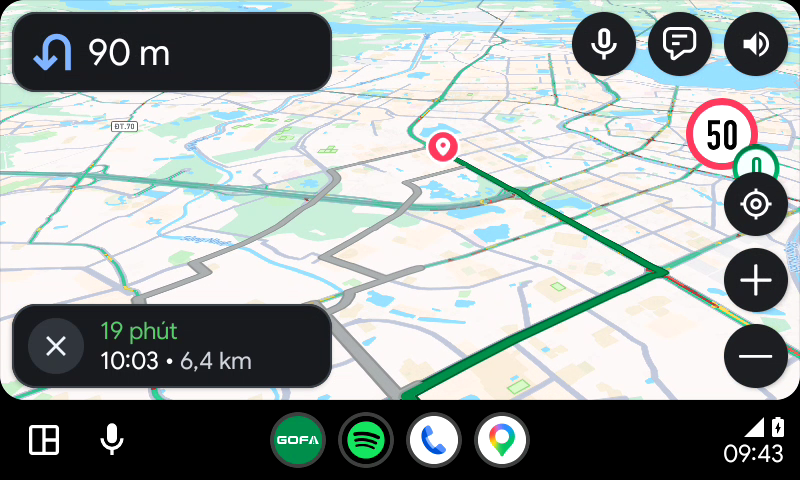 |
PASS | Bản đồ phóng to tập trung chi tiết vào điểm đích. |
| AA_Nav_033 | Kiểm tra chọn nút zoom - | Đã vào màn Chọn lộ trình phụ | Chọn nút Zoom (-) | Chuyển button thành nút zoom in (+). Bản đồ view toàn bộ lộ trình |
Android Auto
|
PASS | Bản đồ thu nhỏ về góc nhìn tổng quan toàn tuyến. |
| AA_Nav_035 | Kiểm tra sang app khác rồi quay lại app Gofa | Đang dẫn đường | Chuyển sang app khác (Home/Media) rồi mở lại app Gofa | Vẫn giữ đúng lộ trình dẫn đường của người dùng |
Android Auto

|
PASS | Phiên dẫn đường được duy trì liên tục ở chế độ nền (Background Navigation). |
| AA_Nav_036 | Kiểm tra sang app dẫn đường khác rồi quay lại app Gofa | Đang dẫn đường | Mở GG Maps/Waze rồi quay lại Gofa | Vẫn giữ đúng lộ trình dẫn đường của người dùng |
Android Auto

|
PASS | Tuyến đường và tiến trình dẫn hướng không bị reset. |
| AA_Nav_037 | Kiểm tra vừa Dẫn đường vừa nghe nhạc | Đang dẫn đường | Phát nhạc từ hệ thống Android Auto trong lúc dẫn đường | Vẫn giữ đúng lộ trình dẫn đường, phát cảnh báo âm thanh khi gặp biển báo |
Android Auto

|
PASS | Âm thanh cảnh báo tự động giảm âm lượng nhạc (audio ducking) để phát rõ ràng. |
| AA_Nav_038 | Kiểm tra nhận cuộc gọi đến | Đang dẫn đường | Có cuộc gọi điện thoại đến | Tạm thời mute âm thanh cảnh báo để ưu tiên âm thanh cuộc gọi |
Android Auto

|
PASS | Ưu tiên kênh đàm thoại điện thoại của xe hơi. |
| AA_Nav_039 | Kiểm tra dừng đèn đỏ | Đang dẫn đường | Xe dừng đèn đỏ (vận tốc = 0 km/h) | Puck hiển thị đúng hướng, đúng line Dẫn đường và bản đồ không bị xoay |
Android Auto
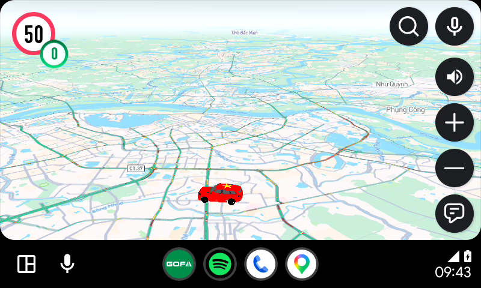 |
PASS | Góc quay bản đồ giữ ổn định tuyệt đối khi xe dừng lại. |
| AA_Nav_040 | Kiểm tra off-route | Đang dẫn đường | Xe di chuyển lệch khỏi lộ trình đã tính | App tính toán và vẽ lại line nhanh (1-2s) |
Android Auto
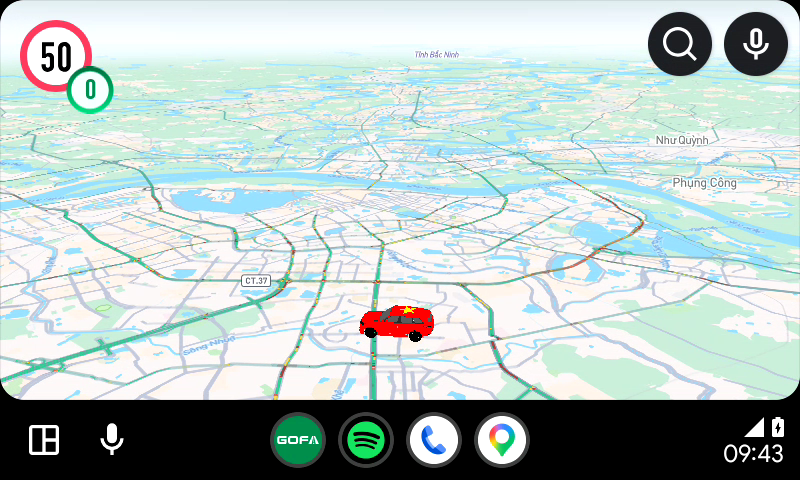 |
PASS | Tự động tái định tuyến (Rerouting) tức thì khi lệch đường. |
| AA_Nav_041 | Kiểm tra chạy Dẫn đường ở chế độ dashboard | Đang dẫn đường | Kích hoạt chế độ chia đôi màn hình Dashboard | App hoạt động bình thường, đúng logic |
Android Auto
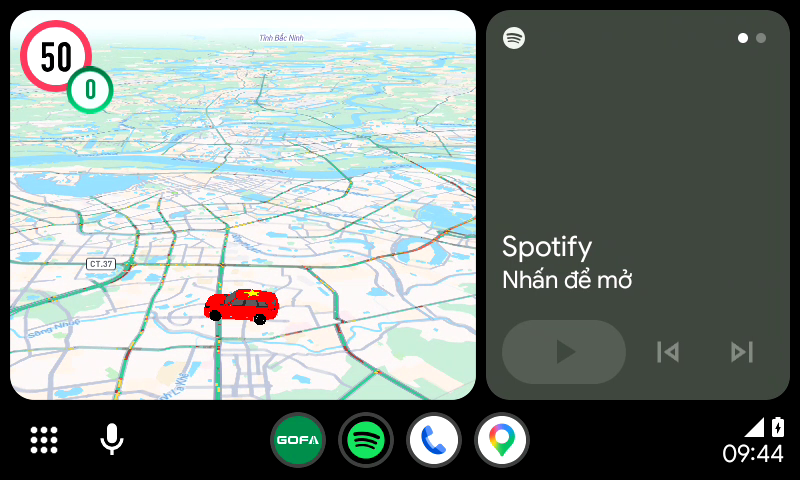 |
PASS | Màn hình dẫn đường co lại vừa vặn trong ô Dashboard, vẫn giữ đầy đủ thông số dẫn đường. |